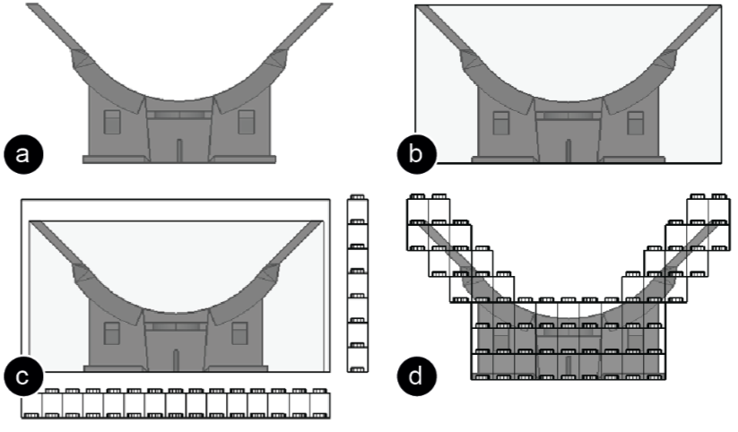
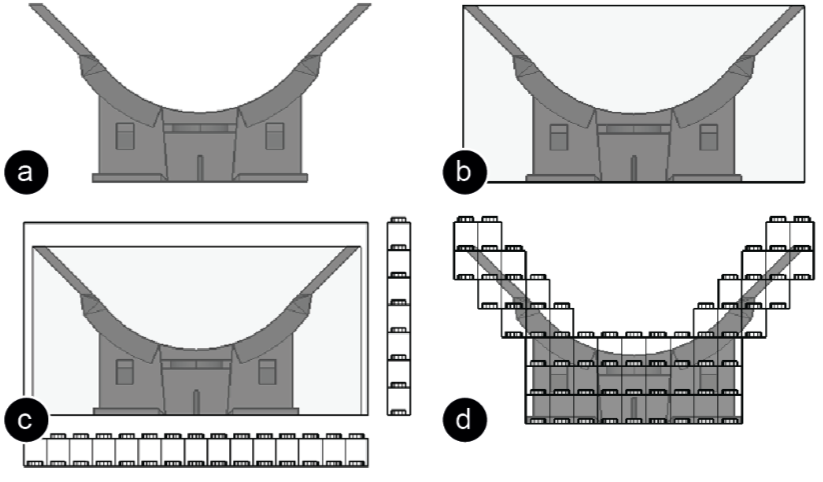

Publication
Mueller, S., Mohr, T., Guenther, K., Frohnhofen, J., Baudisch, P.
faBrickation: Fast 3D Printing of Functional Objects by Integrating Construction Kit Building Blocks.
In Proceedings of
CHI ’14
, pp. 3827-3834.
Best Paper Nominee
Demo at CHI'14, Video Showcase CHI'14
DOI
Paper
Video
Slides
Talk
Press
Video
Talk
Slides


1 / 78

2 / 78

3 / 78

4 / 78

5 / 78

6 / 78

7 / 78

8 / 78

9 / 78

10 / 78

11 / 78

12 / 78

13 / 78

14 / 78

15 / 78

16 / 78

17 / 78

18 / 78

19 / 78

20 / 78

21 / 78

22 / 78

23 / 78

24 / 78

25 / 78

26 / 78

27 / 78

28 / 78

29 / 78

30 / 78

31 / 78

32 / 78

33 / 78

34 / 78

35 / 78

36 / 78

37 / 78

38 / 78

39 / 78

40 / 78

41 / 78

42 / 78

43 / 78

44 / 78

45 / 78

46 / 78

47 / 78

48 / 78

49 / 78

50 / 78

51 / 78

52 / 78

53 / 78

54 / 78

55 / 78

56 / 78

57 / 78

58 / 78

59 / 78

60 / 78

61 / 78

62 / 78

63 / 78

64 / 78

65 / 78

66 / 78

67 / 78

68 / 78

69 / 78

70 / 78

71 / 78

72 / 78

73 / 78

74 / 78

75 / 78

76 / 78

77 / 78

78 / 78

faBrickation:
Fast 3D Printing of Functional Objects by Integrating Construction Kit Building Blocks.
Figure 1: Lets fabricate this head-mounted display body quickly: (a) The exact shape of the lens mounts matters; the user thus marks them as high-resolution in faBrickator and (b) prints them. (c) faBrickator shows the user how to create everything else from Lego bricks and how to insert the 3D printed part. (d) Done in 67 minutes instead of the 14:30h for 3D printing.
We present a new approach to rapid prototyping of functional objects, such as the body of a head-mounted display. The key idea is to save 3D printing time by automatically substituting sub-volumes with standard building blocksin our case Lego bricks. When making the body for a head-mounted display, for example, getting the optical path right is paramount. Users thus mark the lens mounts as high-resolution to indicate that these should later be 3D printed. faBrickator then 3D prints these parts. It also generates instructions that show users how to create everything else from Lego bricks. If users iterate on the design later, faBrickator offers even greater benefit as it allows re-printing only the elements that changed. We validated our system at the example of three 3D models of functional objects. On average, our system fabricates objects 2.44 times faster than traditional 3D printing while requiring only 14 minutes of manual assembly.
Introduction
The recent development in rapid prototyping tools, such as laser cutters, milling machines, and 3D printers [8], allows users to prototype one-off objects and to iterate over designs. These tools offer sufficient shape complexity and resolution to allow prototyping functional objects, such as the body of a head-mounted display with its bosses and mounts for holding the lenses, the head-strap, etc.
While 3D printers can create objects with the necessary level of detail, they are also very slow. Since printing time is largely proportional to the volume of the printed object, fabricating the body of the head-mounted display shown in Figure 1d takes hours on current 3D printers (14:30h on our Dimension SST 1200es). Even printing with multiple heads [6] achieves only a constant speed-up.
Yet speed is mission critical: while printing can be done over night, this still limits designs to a single iteration per day. Thus a typical iteration process easily adds up to a weekeven though the actual design work may not have taken longer than a day. As a result, in todays common design workflow, the 3D printer forms the bottleneck.
Experienced designers tend to address the problem by mixing fabrication techniques and weaving in prefabricated objects into the fabrication process. However, this requires a good amount of ingenuity and experience.
We propose addressing the problem by limiting 3D printing to where it is necessarywe use a much more rapid technique, the assembling of Lego bricks, everywhere else.
faBrickation: Fast 3D Printing with Bricks
Figure 1 illustrates the rapid prototyping workflow we enable with our system faBrickator. faBrickator is a system that substitutes parts of 3D models with Lego bricks. Users specify, which areas they want to have executed in full detail, i.e., by the 3D printer. faBrickator then substitutes everything else with Lego bricks. Based on building instructions generated by faBrickator, users assemble the Lego part while the 3D printer is printing. Since it reduces the volume that needs to be 3D printed, faBrickator speeds up the fabrication process. While faBrickator already speeds up the fabrication of the initial prototype, it saves even more time when subsequently iterating over segments since users only have to reprint the parts that actually changed rather than reprinting the entire model.
Walkthrough: printing a head-mounted display body
In the following example session, the user rapidly prototypes the body of a head-mounted display using faBrickator. In order to get the optical properties of the display right, the exact shape and position of the lens mounts is crucial; the user thus decides to 3D print the lens mounts while fabricating the rest of the design in Lego.
The user starts by modeling the body of the head-mounted display in a 3D editor, here Blender (Figure 2). Alternatively, many users will choose to download a model from the web. The shown model would normally take 14:30h to 3D print. By using faBrickator to limit what gets 3D printed to the lens mounts, the user will be able to print the model in 67 minutes instead.
Figure 2: Walkthrough: The user has created a model of a head-mounted display body in Blender.
#1 Loading and legofication: The user is currently editing the model in Blender (Figure 2). As the user exits the edit mode, the 3D model is automatically loaded into faBrickator, initiated by the Blender plug-in we provide. In faBrickator (Figure 3), the user hits the legofy-button, which causes faBrickator to display a naive legofication of the model, i.e., one that consists only of Legos smallest building blocksthe 1x1 plates (Figure 3b). The user now hits the layout-button (Figure 3c). faBrickator responds by grouping the 1x1 plates into larger plates and bricks, so as to minimize the overall number of bricks. faBrickator also assures a stable design in this step by iterating over the brick layout until all components are connected.
Figure 3: (a) The model is loaded into faBrickator, (b) legofied into 1x1 Lego plates, and (c) layouted.
#2 Marking the high-res areas of the model: Figure 4 demonstrates how the user defines the regions that need to be 3D printed. (a) The user brushes the region around the lens mounts with the high-res brush. (b) This tells faBrickator to execute this area in full detail. The system responds by changing the preview accordingly. By default, faBrickator merges the marked area to a single 3D-printed block. The user repeats the process for the other lens opening.
 Figure 4: Using the high-res brush the user defines the region that will be 3D printed in full detail.
#3 Printing and assembling: To print, the user exports the model. This creates a 3D printable .stl file for each of the two lens mounts. The user then sends the files to the printer using the 3D printer software (in our case CatalystEX).
As soon as the 3D model has been sent to the printer, the user starts assembling the Lego part of the model. As shown in Figure 5, faBrickator provides animated assembly instructions that show how to assemble bottom-up, layer- by-layer.This helps to minimize the time needed for assembly.
67 minutes after the design was sent to the printer, the 3D printer is done fabricating the two lens mounts. Each brick bears a unique ID embossed into one of its sides (Figure 5b). This helps the user to quickly place them into the partially assembled Lego model.
Figure 5: (a) Assembly instructions highlight the next brick in blue. (b) Each 3D printed part has a unique ID.
Figure 6 shows the assembled body of the head-mounted display with the accurately fitted lenses, which took 25 minutes to assemble. The overall fabrication time was thus still bound by the 3D printer, so that the 67 min is the final time for the entire fabrication. In this case, a speed-up of a factor of 12.99.
The main benefit of our approach is that it can change the fabrication process from overnight printing to something that can be carried out multiple times a day. This allows users to perform several design iterations in a day that would otherwise have stretched out over the course of a week.
Figure 4: Using the high-res brush the user defines the region that will be 3D printed in full detail.
#3 Printing and assembling: To print, the user exports the model. This creates a 3D printable .stl file for each of the two lens mounts. The user then sends the files to the printer using the 3D printer software (in our case CatalystEX).
As soon as the 3D model has been sent to the printer, the user starts assembling the Lego part of the model. As shown in Figure 5, faBrickator provides animated assembly instructions that show how to assemble bottom-up, layer- by-layer.This helps to minimize the time needed for assembly.
67 minutes after the design was sent to the printer, the 3D printer is done fabricating the two lens mounts. Each brick bears a unique ID embossed into one of its sides (Figure 5b). This helps the user to quickly place them into the partially assembled Lego model.
Figure 5: (a) Assembly instructions highlight the next brick in blue. (b) Each 3D printed part has a unique ID.
Figure 6 shows the assembled body of the head-mounted display with the accurately fitted lenses, which took 25 minutes to assemble. The overall fabrication time was thus still bound by the 3D printer, so that the 67 min is the final time for the entire fabrication. In this case, a speed-up of a factor of 12.99.
The main benefit of our approach is that it can change the fabrication process from overnight printing to something that can be carried out multiple times a day. This allows users to perform several design iterations in a day that would otherwise have stretched out over the course of a week.
 Figure 6: The final faBrickated model.
Switching from low-res to high-res parts later on
faBrickator allows users to change their mind later on in that it allows replacing additional Lego bricks with 3D printed parts. Figure 7 illustrates this, continuing our walkthrough: the optics of the head-mounted display work great, but after wearing the device for a while, the user notices that it does not sit comfortably on nose and forehead. The user goes back into faBrickator to create more ergonomic forehead and nose pieces.
Figure 6: The final faBrickated model.
Switching from low-res to high-res parts later on
faBrickator allows users to change their mind later on in that it allows replacing additional Lego bricks with 3D printed parts. Figure 7 illustrates this, continuing our walkthrough: the optics of the head-mounted display work great, but after wearing the device for a while, the user notices that it does not sit comfortably on nose and forehead. The user goes back into faBrickator to create more ergonomic forehead and nose pieces.
 Figure 7: Making the forehead and nosepiece high-res for more comfort.
As shown in Figure 7, the user marks the forehead and nose regions as high-res, then exports and 3D prints them. Figure 8 shows how the user removes the corresponding Lego bricks from the faBrickated head-mounted display body and replaces them with the printed parts. This iteration took 3:55 hours including assembly.
Figure 8: (a) Replacing bricks with the 3D printed parts for the head. (b) The assembled model.
Faster Iteration Through Localized Changes
The second key benefit of faBrickator is that helps users iterate more quickly. Rather than reprinting the entire object, faBrickator allows users to make local changes to an already printed object. As this allows for faster design iteration, it allows users to iterate more and thus ultimately leads to better designs [1].
Back in the 3D editor Blender, the user extends the nosepiece so as to perfectly fit the users nose. After the user exits the edit mode in Blender, faBrickator aligns the current version of the 3D model with the previously printed one to minimize the number of bricks that need to be re-fabricated. Figure 9a shows how faBrickator highlights all bricks that changed compared to the last version. (b) The user now rebuilds the nose piece and (c) after printing exchanges it with the one that didnt fit perfectly.
Figure 9: (a,b) faBrickator highlights what changed between two model versions. (c) The user then reprints only the part that changed.
Contribution, Benefits, Limitations
The main contribution of this paper is a novel approach to fast 3D fabrication and a system called faBrickator that implements this approach. The main idea is to complement 3D printing with construction kit building blocks. The main benefit of our approach is that it allows for faster fabrication2.44 times faster than traditional 3D printing on average (see section Validation). This allows users, such as industrial designers, to achieve several design iterations in a day that would otherwise extend across multiple days. faBrickators approach is especially beneficial in situations that underlay external constraints such as changing customer needs and thus require many subsequent iterations.
faBrickator implements additional speed-ups by (1) printing in low-detail where possible, i.e., using Lego bricks, (2) allowing for fast iteration by limiting reprinting to those regions that have actually changed, (3)minimizing the effort for manual assembly by using different sized Lego bricks. As a side effect, it also allows repairing objects that are partially broken. Unlike approaches that are entirely based on Legos, our approach allows creating precise parts for regions that require additional accuracy.
On the flipside, faBrickator trades in detail for speed. While suitable for iteration, the partially legofied objects do require a full 3D printing process eventually, i.e., before being deployed. There is also a modest amount of manual effort required, since users need to assemble the Lego part of the object manually.
Finally, as discussed in the introduction, faBrickator applies to functional objects, i.e., objects that have shape constraints only in specific areas, which is commonly the case for objects that fulfill a functional purpose. Most of the speed-up faBrickator achieves results from the fact that a given functional purpose can be implemented in many different forms, allowing faBrickator to choose the one that can be fabricated fastest. This approach, however, does not lead to benefits when designing objects where the entire shape matters, such as artistic or decorative shapes.
Implementation
faBrickator is built in CoffeeScript using the constructive solid geometry library for its geometry operations. We also provide a Blender Plugin written in Python for easier file exchange between Blender and faBrickator.
#1 File Exchange between Blender and faBrickator
Our Blender plugin automatically exports the 3D model as an .stl file into a predefined folder as soon as the user exits the edit mode. faBrickator automatically detects if a new .stl file appears in the folder and imports it accordingly. The Blender plugin runs in a separate thread to prevent interference with Blenders editing functionality.
#2 Legofying: converting the 3D model into Legos
Figure 10 shows how faBrickator converts the 3D model into Legos smallest building blocksthe 1x1 Lego plates. faBrickator first determines the bounding box of the model and extends it to the full multitude of a 1x1 Lego plate (8x8x3.2mm). Afterwards, faBrickator fills the bounding box with Lego plates in those positions that are either inside the model or share a portion of the volume with it. The remaining locations are left empty.

Figure 10: Legofying: (a) model, (b) bounding box, (c) extended bounding box, (d) legofied model.
#3 Layouting Lego Bricks
faBrickators layout algorithm optimizes for two things: it minimizes the number of bricks used for assembly while maximizing stability. For layouting, we use the layout algorithm proposed by Testuz et al. [22]. The algorithm works as following: (1) it merges the 1x1 plates into larger Lego bricks, (2) it creates a connectivity graph representing the brick layout, (3) it identifies weak points in the graph (unstable connections), and (4) tries to relayout the bricks at these positions in a different way to erase the weak points.
#4 Converting Lego bricks into 3D printable bricks
When users select a Lego brick with the high-res brush, it is converted into a 3D printable brick. In order to generate the 3D printable brick, we use a Boolean intersection of the Lego brick with the original 3D model geometry (see Figure 11).
Figure 11: The 3D printable brick is a result of a Boolean intersection of the model and the Lego brick.
#5 Merging and splitting Lego bricks
When users select several bricks using the merge brush, they are merged into a single compound 3D printable brick. In our initial approach, we used the Boolean union operation to merge the bricks, which turned out to be very expensive. The reason is that the side faces of the two Lego bricks that should be merged are always co-planar, which is the most expensive case for a union operation.
Instead faBrickator uses a tagging approach for merging. As can be seen in Figure 12a, faBrickator tags each side of a Lego brick according to its orientation in space (e.g., side-y, side+y). In order to merge two bricks, we simply identify the matching neighbor sides by their tag and remove the sides since they would be inside the compound brick (Figure 12b). If later on users apply the split brush, we just enable the sides again.
Figure 7: Making the forehead and nosepiece high-res for more comfort.
As shown in Figure 7, the user marks the forehead and nose regions as high-res, then exports and 3D prints them. Figure 8 shows how the user removes the corresponding Lego bricks from the faBrickated head-mounted display body and replaces them with the printed parts. This iteration took 3:55 hours including assembly.
Figure 8: (a) Replacing bricks with the 3D printed parts for the head. (b) The assembled model.
Faster Iteration Through Localized Changes
The second key benefit of faBrickator is that helps users iterate more quickly. Rather than reprinting the entire object, faBrickator allows users to make local changes to an already printed object. As this allows for faster design iteration, it allows users to iterate more and thus ultimately leads to better designs [1].
Back in the 3D editor Blender, the user extends the nosepiece so as to perfectly fit the users nose. After the user exits the edit mode in Blender, faBrickator aligns the current version of the 3D model with the previously printed one to minimize the number of bricks that need to be re-fabricated. Figure 9a shows how faBrickator highlights all bricks that changed compared to the last version. (b) The user now rebuilds the nose piece and (c) after printing exchanges it with the one that didnt fit perfectly.
Figure 9: (a,b) faBrickator highlights what changed between two model versions. (c) The user then reprints only the part that changed.
Contribution, Benefits, Limitations
The main contribution of this paper is a novel approach to fast 3D fabrication and a system called faBrickator that implements this approach. The main idea is to complement 3D printing with construction kit building blocks. The main benefit of our approach is that it allows for faster fabrication2.44 times faster than traditional 3D printing on average (see section Validation). This allows users, such as industrial designers, to achieve several design iterations in a day that would otherwise extend across multiple days. faBrickators approach is especially beneficial in situations that underlay external constraints such as changing customer needs and thus require many subsequent iterations.
faBrickator implements additional speed-ups by (1) printing in low-detail where possible, i.e., using Lego bricks, (2) allowing for fast iteration by limiting reprinting to those regions that have actually changed, (3)minimizing the effort for manual assembly by using different sized Lego bricks. As a side effect, it also allows repairing objects that are partially broken. Unlike approaches that are entirely based on Legos, our approach allows creating precise parts for regions that require additional accuracy.
On the flipside, faBrickator trades in detail for speed. While suitable for iteration, the partially legofied objects do require a full 3D printing process eventually, i.e., before being deployed. There is also a modest amount of manual effort required, since users need to assemble the Lego part of the object manually.
Finally, as discussed in the introduction, faBrickator applies to functional objects, i.e., objects that have shape constraints only in specific areas, which is commonly the case for objects that fulfill a functional purpose. Most of the speed-up faBrickator achieves results from the fact that a given functional purpose can be implemented in many different forms, allowing faBrickator to choose the one that can be fabricated fastest. This approach, however, does not lead to benefits when designing objects where the entire shape matters, such as artistic or decorative shapes.
Implementation
faBrickator is built in CoffeeScript using the constructive solid geometry library for its geometry operations. We also provide a Blender Plugin written in Python for easier file exchange between Blender and faBrickator.
#1 File Exchange between Blender and faBrickator
Our Blender plugin automatically exports the 3D model as an .stl file into a predefined folder as soon as the user exits the edit mode. faBrickator automatically detects if a new .stl file appears in the folder and imports it accordingly. The Blender plugin runs in a separate thread to prevent interference with Blenders editing functionality.
#2 Legofying: converting the 3D model into Legos
Figure 10 shows how faBrickator converts the 3D model into Legos smallest building blocksthe 1x1 Lego plates. faBrickator first determines the bounding box of the model and extends it to the full multitude of a 1x1 Lego plate (8x8x3.2mm). Afterwards, faBrickator fills the bounding box with Lego plates in those positions that are either inside the model or share a portion of the volume with it. The remaining locations are left empty.

Figure 10: Legofying: (a) model, (b) bounding box, (c) extended bounding box, (d) legofied model.
#3 Layouting Lego Bricks
faBrickators layout algorithm optimizes for two things: it minimizes the number of bricks used for assembly while maximizing stability. For layouting, we use the layout algorithm proposed by Testuz et al. [22]. The algorithm works as following: (1) it merges the 1x1 plates into larger Lego bricks, (2) it creates a connectivity graph representing the brick layout, (3) it identifies weak points in the graph (unstable connections), and (4) tries to relayout the bricks at these positions in a different way to erase the weak points.
#4 Converting Lego bricks into 3D printable bricks
When users select a Lego brick with the high-res brush, it is converted into a 3D printable brick. In order to generate the 3D printable brick, we use a Boolean intersection of the Lego brick with the original 3D model geometry (see Figure 11).
Figure 11: The 3D printable brick is a result of a Boolean intersection of the model and the Lego brick.
#5 Merging and splitting Lego bricks
When users select several bricks using the merge brush, they are merged into a single compound 3D printable brick. In our initial approach, we used the Boolean union operation to merge the bricks, which turned out to be very expensive. The reason is that the side faces of the two Lego bricks that should be merged are always co-planar, which is the most expensive case for a union operation.
Instead faBrickator uses a tagging approach for merging. As can be seen in Figure 12a, faBrickator tags each side of a Lego brick according to its orientation in space (e.g., side-y, side+y). In order to merge two bricks, we simply identify the matching neighbor sides by their tag and remove the sides since they would be inside the compound brick (Figure 12b). If later on users apply the split brush, we just enable the sides again.
 Figure 12: Merging: (a) The sides of each brick are tagged according to their orientation. (b) We use this to identify, which sides need to be removed for merging.
#6 Detecting the completeness of knobs and tubes
In order to ensure a stable brick layout, faBrickator needs to detect working knobs on a 3D printable brick. Only complete knobs can be used to make a connection with another brick. A knob is only complete if all of the knobs faces were inside the model before the intersection with the model (see Figure 13). If a part of the knob lays outside the model, it is cut off during the intersection and the knob is no longer functional.
A regular Boolean intersect determines inside and outside faces in the process of calculating the intersection. However, as the result the intersect operation only returns a geometrical volume from which it is difficult to tell if the knob is complete or not. faBrickator therefore has its own intersect operation that stores the meta-information about inside and outside faces in tags. Before the intersection, all the faces of a knob are tagged with the knob-tag (Figure 13a). During the intersect, faBrickator tags, which faces are inside/outside of the model (Figure 13b). Afterwards, we check if there is any face that was with the knob-tag that also has the outside-tag. If there is none the knob is complete. We use the same mechanism for the tubes on the bottom side of the bricks.
Figure 13: Detecting the completeness of knobs: (a) During intersection, we (b) tag if a part of the knob lies outside the model.
#7 Calculating changes between design iterations
When users iterate over a model, faBrickator displays which part of the model changed. For this, we first align the new 3D model with the old 3D model because faBrickator allows users to rotate the 3D model in Blender and to move it around freely. In order to align the two models, faBrickator calculates a transformation matrix based on the distance of specific model features to a reference point we use the point of origin. The triangles of a model are not suited as model features because even small changes of the model result in a completely different tessellation during the export from a 3D modeling program (e.g., Blender).
In order to create a representation of the model that is comparable, we merge the triangles into larger sides based on their orientation. First we merge neighbor triangles that have the same normal into larger convex polygons. In a second step, we merge all convex polygons with the same normal into a side. We use these sides for comparison (i.e. their outline) and after finding a match, calculate the transformation matrix and align the models.
Now that the models are aligned, we legofy the new model. Afterwards, we determine which parts changed by calculating the differences based on the 1x1 Lego plates. If a plate was added or removed, the part changed. For bricks that were marked as high-res 3D printed bricks in the old model, we use a volume comparison to determine changes. For bricks that did not change, we copy the brick layout of the old model to minimize the number of bricks that need to be reassembled.
#8 Eliminating Non-Manifold Geometry
When downloading models from the online platform Thingiverse, we experienced that many 3D models have invalid geometry, i.e. are not manifold/watertight. Therefore, we identified and cleaned the faulty geometry in the program meshlab before we further processed it with faBrickator.
Validation
Beside the head-mounted display body, we faBrickated two additional example objects we downloaded from Thingiverse. faBrickator fabricates the three objects 3.11 times, 2.75 times, and 1.45 times faster (avg. 2.44 times) than traditional 3D printing while requiring only 14 minutes of manual assembly on average. How much faBrickator speeds up the prototyping process depends on how much volume can be substituted with bricks.
Figure 14 shows the first model: a soap bar dispenser that dispenses small flakes of soap when the sled is moved back and forth. It consists of two pieces: (1) the body that holds the soap and that the user moves with his dominant hand in the sled, and (2) the mount for the razor blades and the sled.
Figure 14: (a,b) This soap dispenser only takes (c) 2:05h and 5 minutes assembly compared to the 6:30h of traditional printing.
Producing this object with traditional 3D printing takes 6:30h compared to only 2:05h printing and 5minutes assembly when using faBrickator (casing: 0:51h printing and 3 minutes assembly, razor blade: 1:14h printing and 2 minutes assembly). This is an improvement of a factor 3.11 for 3D printing time.
Figure 15 shows the second model: a penny ballista that allows ejecting a penny with a rubber band. The ballista consists of a mount for the penny and the ballista body with a sled.
Figure 12: Merging: (a) The sides of each brick are tagged according to their orientation. (b) We use this to identify, which sides need to be removed for merging.
#6 Detecting the completeness of knobs and tubes
In order to ensure a stable brick layout, faBrickator needs to detect working knobs on a 3D printable brick. Only complete knobs can be used to make a connection with another brick. A knob is only complete if all of the knobs faces were inside the model before the intersection with the model (see Figure 13). If a part of the knob lays outside the model, it is cut off during the intersection and the knob is no longer functional.
A regular Boolean intersect determines inside and outside faces in the process of calculating the intersection. However, as the result the intersect operation only returns a geometrical volume from which it is difficult to tell if the knob is complete or not. faBrickator therefore has its own intersect operation that stores the meta-information about inside and outside faces in tags. Before the intersection, all the faces of a knob are tagged with the knob-tag (Figure 13a). During the intersect, faBrickator tags, which faces are inside/outside of the model (Figure 13b). Afterwards, we check if there is any face that was with the knob-tag that also has the outside-tag. If there is none the knob is complete. We use the same mechanism for the tubes on the bottom side of the bricks.
Figure 13: Detecting the completeness of knobs: (a) During intersection, we (b) tag if a part of the knob lies outside the model.
#7 Calculating changes between design iterations
When users iterate over a model, faBrickator displays which part of the model changed. For this, we first align the new 3D model with the old 3D model because faBrickator allows users to rotate the 3D model in Blender and to move it around freely. In order to align the two models, faBrickator calculates a transformation matrix based on the distance of specific model features to a reference point we use the point of origin. The triangles of a model are not suited as model features because even small changes of the model result in a completely different tessellation during the export from a 3D modeling program (e.g., Blender).
In order to create a representation of the model that is comparable, we merge the triangles into larger sides based on their orientation. First we merge neighbor triangles that have the same normal into larger convex polygons. In a second step, we merge all convex polygons with the same normal into a side. We use these sides for comparison (i.e. their outline) and after finding a match, calculate the transformation matrix and align the models.
Now that the models are aligned, we legofy the new model. Afterwards, we determine which parts changed by calculating the differences based on the 1x1 Lego plates. If a plate was added or removed, the part changed. For bricks that were marked as high-res 3D printed bricks in the old model, we use a volume comparison to determine changes. For bricks that did not change, we copy the brick layout of the old model to minimize the number of bricks that need to be reassembled.
#8 Eliminating Non-Manifold Geometry
When downloading models from the online platform Thingiverse, we experienced that many 3D models have invalid geometry, i.e. are not manifold/watertight. Therefore, we identified and cleaned the faulty geometry in the program meshlab before we further processed it with faBrickator.
Validation
Beside the head-mounted display body, we faBrickated two additional example objects we downloaded from Thingiverse. faBrickator fabricates the three objects 3.11 times, 2.75 times, and 1.45 times faster (avg. 2.44 times) than traditional 3D printing while requiring only 14 minutes of manual assembly on average. How much faBrickator speeds up the prototyping process depends on how much volume can be substituted with bricks.
Figure 14 shows the first model: a soap bar dispenser that dispenses small flakes of soap when the sled is moved back and forth. It consists of two pieces: (1) the body that holds the soap and that the user moves with his dominant hand in the sled, and (2) the mount for the razor blades and the sled.
Figure 14: (a,b) This soap dispenser only takes (c) 2:05h and 5 minutes assembly compared to the 6:30h of traditional printing.
Producing this object with traditional 3D printing takes 6:30h compared to only 2:05h printing and 5minutes assembly when using faBrickator (casing: 0:51h printing and 3 minutes assembly, razor blade: 1:14h printing and 2 minutes assembly). This is an improvement of a factor 3.11 for 3D printing time.
Figure 15 shows the second model: a penny ballista that allows ejecting a penny with a rubber band. The ballista consists of a mount for the penny and the ballista body with a sled.
 Figure 15: (a) A faBrickated penny ballista takes (b) only 2:06h for printing and 11 minutes for assembly compared to 3:03h when 3D printing entirely.
Using 3D printing, this model takes 3:03h compared to 2:06h printing and 11 minutes assembly when using faBrickator (penny mount: 0:59h printing, ballista body: 1:07h printing and 11 minutes for assembly). This is an improvement of a factor 1.45 for 3D printing time.
The third model is the already presented head-mounted display body with the lens mounts and the head and nose parts. When using faBrickator, it took 5:17 hours for 3D printing and only 25 minutes for assembly (lens mounts: 0:33h and 0:34h, forehead piece top: 1:26h, forehead pieces bottom: 0:41h and 0:44h, nose bridge: 0:25h, nose: 0:54h). This is an improvement of a factor 2.75 for 3D printing time, which for the completely 3D printed model is 14:30h.
While these examples give first insights into potential time- savings when using faBrickator, we think that faBrickator will provide an even greater speed-up when creating very large objects. We hope this will encourage users to start designing and fabricating objects that exceed the volume of current 3D printers.
Conclusion
In this paper, we presented a new approach to rapid fabrication and our systemfaBrickatorthat implements this approach. The key idea is to substitute sub-volumes of 3D models with standard building blocks. We demonstrated how the modular approach of faBrickator is especially useful when iterating over a design since only the parts that changed are reprinted not the entire model.
As future work, we plan to extend faBrickator so as to work with a wider range of building blocks and objects in order to further decrease printing time. We also plan to improve the assembly instructions according to the Lego specification. Finally, we aim at automating the assembly process by building on existing tools that are able to assemble standard Lego bricks [9].
Figure 15: (a) A faBrickated penny ballista takes (b) only 2:06h for printing and 11 minutes for assembly compared to 3:03h when 3D printing entirely.
Using 3D printing, this model takes 3:03h compared to 2:06h printing and 11 minutes assembly when using faBrickator (penny mount: 0:59h printing, ballista body: 1:07h printing and 11 minutes for assembly). This is an improvement of a factor 1.45 for 3D printing time.
The third model is the already presented head-mounted display body with the lens mounts and the head and nose parts. When using faBrickator, it took 5:17 hours for 3D printing and only 25 minutes for assembly (lens mounts: 0:33h and 0:34h, forehead piece top: 1:26h, forehead pieces bottom: 0:41h and 0:44h, nose bridge: 0:25h, nose: 0:54h). This is an improvement of a factor 2.75 for 3D printing time, which for the completely 3D printed model is 14:30h.
While these examples give first insights into potential time- savings when using faBrickator, we think that faBrickator will provide an even greater speed-up when creating very large objects. We hope this will encourage users to start designing and fabricating objects that exceed the volume of current 3D printers.
Conclusion
In this paper, we presented a new approach to rapid fabrication and our systemfaBrickatorthat implements this approach. The key idea is to substitute sub-volumes of 3D models with standard building blocks. We demonstrated how the modular approach of faBrickator is especially useful when iterating over a design since only the parts that changed are reprinted not the entire model.
As future work, we plan to extend faBrickator so as to work with a wider range of building blocks and objects in order to further decrease printing time. We also plan to improve the assembly instructions according to the Lego specification. Finally, we aim at automating the assembly process by building on existing tools that are able to assemble standard Lego bricks [9].
 Figure 16: How much faBrickator speeds up the prototyping process depends on how much volume can be substituted with bricks.
Figure 16: How much faBrickator speeds up the prototyping process depends on how much volume can be substituted with bricks.